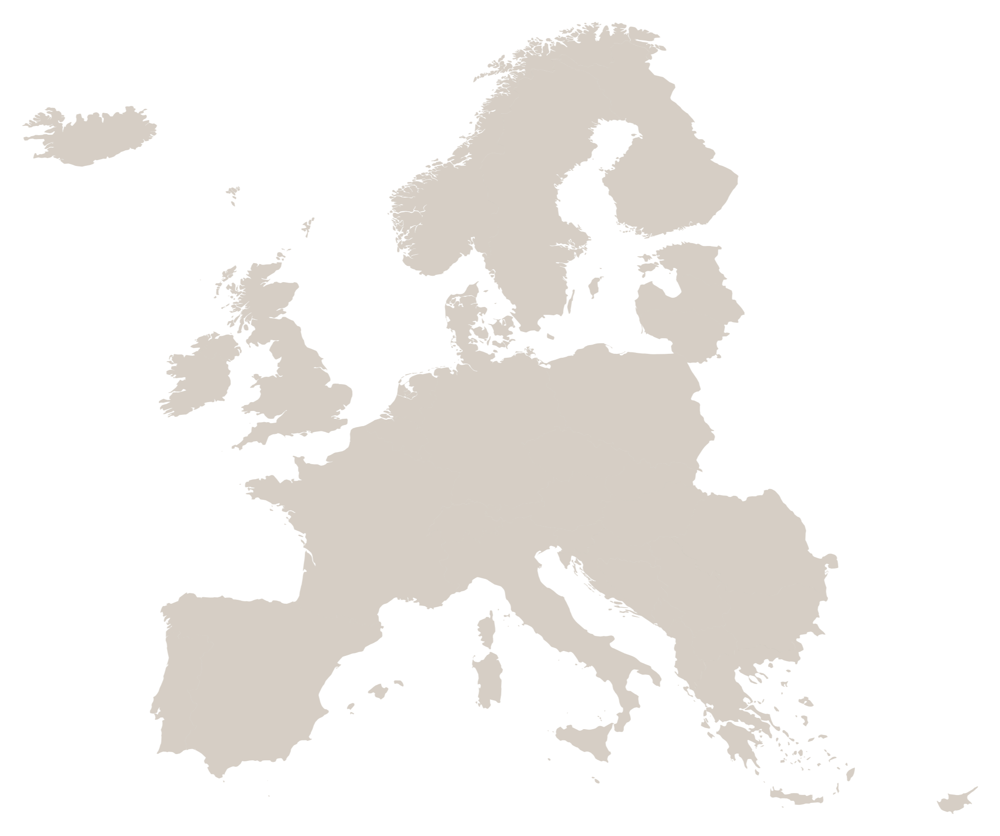
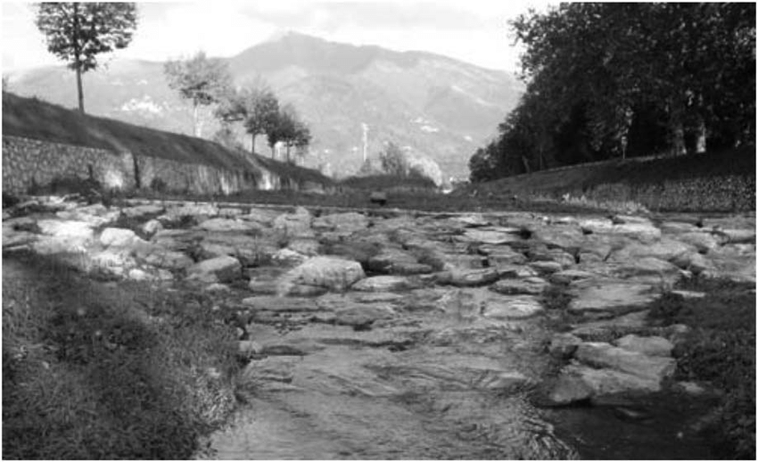
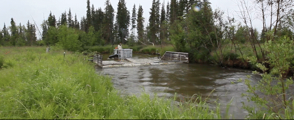
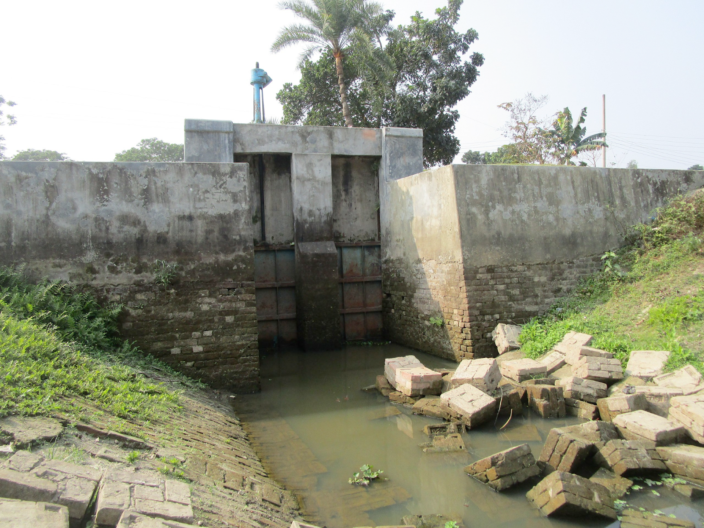

<ion-header [translucent]="true">
    <ion-toolbar>
        <ion-title>
            {{'pageTitle' | transloco}}
        </ion-title>
    </ion-toolbar>
</ion-header>


<ion-content [fullscreen]="true">
    <div id="container">

        <!-- sticky side -->
        <main>
            <section id="intro">
                <h1 class="intro__hed">{{'introTitle'|transloco}}</h1>
                <h4 class="intro__hed">{{'introSubtitle'|transloco}}</h4>
                <div [innerHTML]="'introParagraphs'|transloco">
                </div>
            </section>

            <section id="healthy_rivers" class="scrolly scrolly-overlay">
                <!-- background content -->
                <figure>
                    
                    
                    
                    
                </figure>

                <!-- foreground master content -->
                <article>
                    <div class="step" data-step="1">
                        <div [innerHTML]="'healthyRivers.step-1'|transloco"></div>
                    </div>
                    <div class="step" data-step="2">
                        <div [innerHTML]="'healthyRivers.step-2'|transloco"></div>
                    </div>
                    <div class="step" data-step="3">
                        <div [innerHTML]="'healthyRivers.step-3'|transloco"></div>
                    </div>
                    <div class="step" data-step="4">
                        <div [innerHTML]="'healthyRivers.step-4'|transloco"></div>
                    </div>
                    <div class="step" data-step="5">
                        <div [innerHTML]="'healthyRivers.step-5'|transloco"></div>
                    </div>
                    <div class="step" data-step="6">
                        <div [innerHTML]="'healthyRivers.step-6'|transloco"></div>
                    </div>
                    <div class="step" data-step="7">
                        <div [innerHTML]="'healthyRivers.step-7'|transloco"></div>
                    </div>

                </article>
            </section>

            <!-- non scrolly content -->
            <section id="outro">
                <div [innerHTML]="'healthyRivers.outro'|transloco">
                </div>
            </section>

            <section id="river_connectivities" class="scrolly scrolly-sticky-side">

                <!-- stick figure -->
                <figure>
                    <div id="longitudinal_img" class="stacked_img river_connectivity_animation" data-step="1"></div>
                    <div id="lateral_img" class="stacked_img river_connectivity_animation" data-step="2,3"></div>
                    <div id="vertical_img" class="stacked_img river_connectivity_animation" data-step="4"></div>
                    <div id="temporal_img" class="stacked_img river_connectivity_animation" data-step="5"></div>
                </figure>
                <!-- scrolling side -->
                <article>
                    <div class="step" data-step="1">
                        <div [innerHTML]="'connectivity.step-1'|transloco"></div>
                    </div>
                    <div class="step" data-step="2">
                        <div [innerHTML]="'connectivity.step-2'|transloco"></div>
                    </div>
                    <div class="step" data-step="3">
                        <div [innerHTML]="'connectivity.step-3'|transloco"></div>
                    </div>
                    <div class="step" data-step="4">
                        <div [innerHTML]="'connectivity.step-4'|transloco"></div>
                    </div>
                    <div class="step" data-step="5">
                        <div [innerHTML]="'connectivity.step-5'|transloco"></div>
                    </div>
                </article>

            </section>


            <section id="anthropogenic_threats" class="scrolly scrolly-overlay">
                <!-- background content -->
                <div id="barrier_counter">
                    <h5>{{'anthropogenicThreats.barrierCounterTitle' | transloco}}</h5>
                    <h5>{{barrierCount}}</h5>
                </div>
                <figure>
                    <!--  -->

                    

                    <div id="anthropogenic_threats_dams" class="stacked_img anthropogenic_threats" data-step='4,5'>
                    </div>

                    <div id="anthropogenic_threats_ramps" class="stacked_img anthropogenic_threats" data-step='4'></div>
                    <!--  -->

                    <div id="anthropogenic_threats_weirs" class="stacked_img anthropogenic_threats" data-step='4'></div>
                    <!--  -->

                    <div id="anthropogenic_threats_culverts" class="stacked_img anthropogenic_threats" data-step='4'>
                    </div>
                    <!--  -->

                    <div id="anthropogenic_threats_sluices" class="stacked_img anthropogenic_threats" data-step='4'>
                    </div>
                    <!--  -->

                    <div id="anthropogenic_threats_others" class="stacked_img anthropogenic_threats" data-step='4'>
                    </div>

                    <div id="anthropogenic_threats_hex_bin" class="stacked_img anthropogenic_threats" data-step='4'>
                    </div>

                </figure>

                <!-- foreground master content -->
                <article>
                    <div class="step" data-step="1">
                        <div [innerHTML]="'anthropogenicThreats.step-1'|transloco"></div>
                    </div>
                    <div class="step" data-step="2">
                        <div [innerHTML]="'anthropogenicThreats.step-2'|transloco"></div>
                    </div>
                    <div class="step" data-step="3">
                        <div [innerHTML]="'anthropogenicThreats.step-3'|transloco"></div>
                    </div>
                    <div class="step" data-step="4">
                        <div [innerHTML]="'anthropogenicThreats.step-4'|transloco"></div>
                    </div>
                    <div class="step" data-step="5">
                        <div [innerHTML]="'anthropogenicThreats.step-5'|transloco"></div>
                    </div>
                    <div class="step" data-step="6">
                        <div [innerHTML]="'anthropogenicThreats.step-6'|transloco"></div>
                    </div>
                    <div class="step" data-step="7">
                        <div [innerHTML]="'anthropogenicThreats.step-7'|transloco"></div>
                    </div>
                    <div class="step" data-step="8">
                        <div [innerHTML]="'anthropogenicThreats.step-8'|transloco"></div>
                    </div>
                    <div class="step" data-step="9">
                        <div [innerHTML]="'anthropogenicThreats.step-9'|transloco"></div>
                    </div>
                    <div class="step" data-step="10">
                        <div [innerHTML]="'anthropogenicThreats.step-10'|transloco"></div>
                    </div>
                    <div class="step" data-step="11">
                        <div [innerHTML]="'anthropogenicThreats.step-11'|transloco"></div>
                    </div>
                    <div class="step" data-step="12">
                        <div [innerHTML]="'anthropogenicThreats.step-12'|transloco"></div>
                    </div>
                    <div class="step" data-step="13">
                        <div [innerHTML]="'anthropogenicThreats.step-13'|transloco"></div>
                    </div>
                    <div class="step" data-step="14">
                        <div [innerHTML]="'anthropogenicThreats.step-14'|transloco"></div>
                    </div>
                    <div class="step" data-step="15">
                        <div [innerHTML]="'anthropogenicThreats.step-16'|transloco"></div>
                    </div>
                    <div class="step" data-step="16">
                        <div [innerHTML]="'anthropogenicThreats.step-16'|transloco"></div>
                    </div>
                    <div class="step" data-step="17">
                        <div [innerHTML]="'anthropogenicThreats.step-17'|transloco"></div>
                    </div>
                    <div class="step" data-step="18">
                        <div [innerHTML]="'anthropogenicThreats.step-18'|transloco"></div>
                    </div>
                </article>
            </section>

            <section id="outro"></section>
        </main>

        <div class='debug'></div>


    </div>
</ion-content>